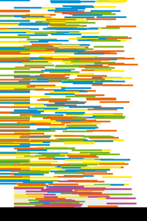

| About IR |
| Editors |
| Author instructions |
| Copyright |
| Author index |
| Subject index |
| Search |
| Reviews |
| Weblog |
| Register |
| Home |
Volume 9 No 1 October, 2003
Invited paper: Brenda Dervin
Human studies and user studies: a call for methodological interdisciplinarity
Gary Burnett, Michael H. Dickey, Michelle M. Kazmer, and Katherine M. Chudoba
Inscription and interpretation of text: a cultural hermeneutic examination of virtual community
Kalervo Järvelin and T.D. Wilson
On conceptual models for information seeking and retrieval research
Barbara Niedźwiedzka
A proposed general model of information behaviour
Jannica Heinström
Five personality dimensions and their influence on information behaviour
 Resúmenes en Español
Resúmenes en Español
Watch this: corralling wild bits — one of a series of occasional columns by Terrence A. Brooks of the Information School, University of Washington, USA.
Reviews
Software Review: EndNote 7 and VizRef.
Dupuis, Elizabeth A. Developing Web-based instruction: planning, designing, managing, and evaluating for results. London: Facet Publishing, 2003.
Huberman, B.O. The laws of the Web. Cambridge, MA: MIT Press, 2001
Kizza, Joseph M. Ethical and social issues in the information age. 2nd ed. New York: Springer Verlag, 2003.
Lipow, Anne Grodzins. The virtual reference librarian's handlbook. Berkeley, CA/New York, NY: Library Solutions Press and Neil Schuman Publishers, 2003
McKay, Duncan. Effective financial planning for library and information services. 2nd ed. London: Europa Publications, 2003.
Person vs. agent: views of the computer future. Review of: Hayes-Roth, F. & Amor, D. Radical simplicity. Upper Saddle River, NJ: Prentice Hall, 2003 and Shneiderman, B. Leonardo's laptop. Cambridge, MA: MIT Press, 2002.
Woolgar, Steve (ed.) Virtual society? Technology, cyberbole, reality. Oxford: Oxford University Press, 2002.
What's in the open access e-journals?
Conference announcements
A message to Conference organizers.
Workshop on Teminology, Ontology & Knowledge Representation, Thursday 22 January 2004, Université Jean Moulin, Lyon 3
Thinking beyond digital libraries - designing the information strategy for the next decade, 7th International Bielefeld Conference, Bielefeld Convention Centre, 3 - 5 February 2004
ISIC (Information Seeking in Context) 2004, Dublin, Ireland, 1-3 September 2004
Check the other resources available at InformationR.net - free resources for information researchers. If you find Information Research useful please sign in and we'll notify you of future issues.
Contribute ideas and links to relevant resources on the Weblog. Join at
http://www.free-conversant.com/irweblog/
Information Research: an international electronic journal, is published four times a year by Professor Tom Wilson with technical support from Lund University, Sweden and editorial support from the Swedish School of Librarianship and Information Science, Högskolan in Borås.
| |||
 |
Web Counter |
||